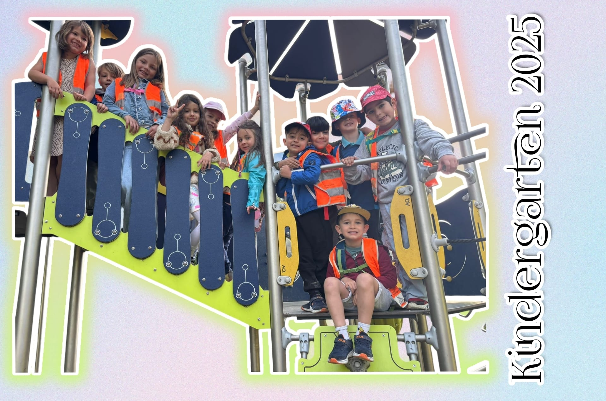

Küche des Kindergartens Rote Füchse

Willkommen in unserer Kindergartenküche!
Diese Seite ist ein liebevolles Projekt des Kindergartens Rote Füchse.
Hier teilen wir traditionelle Rezepte aus den Heimatländern unserer Kinder.
Mit viel Herz, Vielfalt und Geschmack – direkt aus unserer Küche!